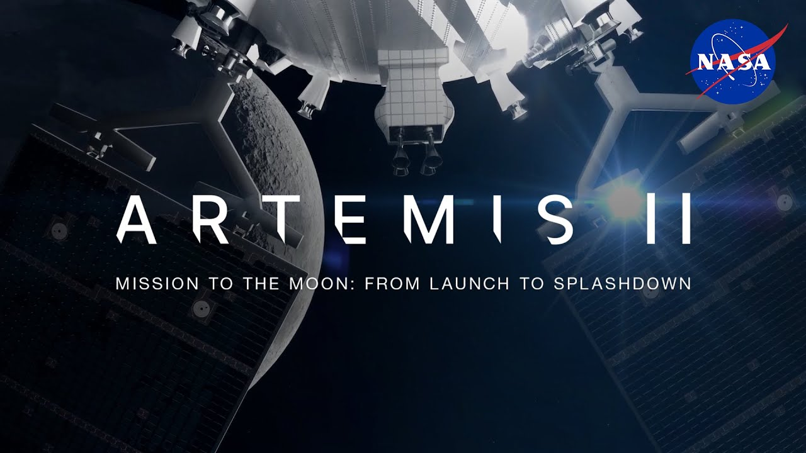

Artemis II Returns to Earth!
The mission was a success


All four crew members made it safely back to Earth with a splashdown in the Pacific Ocean.
Unless you've been living under a rock, you know that the Artemis II rocket was launched into space at 5:35pm CST on April 1st, 2026. The four astronauts on board spent ten whole days around the moon! Did you know that this mission actually broke the record for the deeepst journey into space at more than 250,000 miles?
Anyways, here are two fun facts I have compiled from many sources, mainly NASA and news on the internet. This was the first time astronauts were launched on the Space Launch System Rocket. The Orion Capsule that was used in the mission had high tech computer power and six windows, which allowed for much clearer and better imaging and observation.
The final thing I would like to talk about regarding the Artemis II mission is the exciting Splashdown! At 7:07pm CST, The Artemis Orion Capsule came down and landed in the Pacific Ocean just off the coast of San Diego, California. Wow, that was quite the journey, wasn't it? Well I'm working on writing blogs about real-life events now, and this was my first. I don't know a lot about rockets and this mission stuff, but it was fun to research and write about it.
I also have to give credit for the picture. All image rights go to NASA.